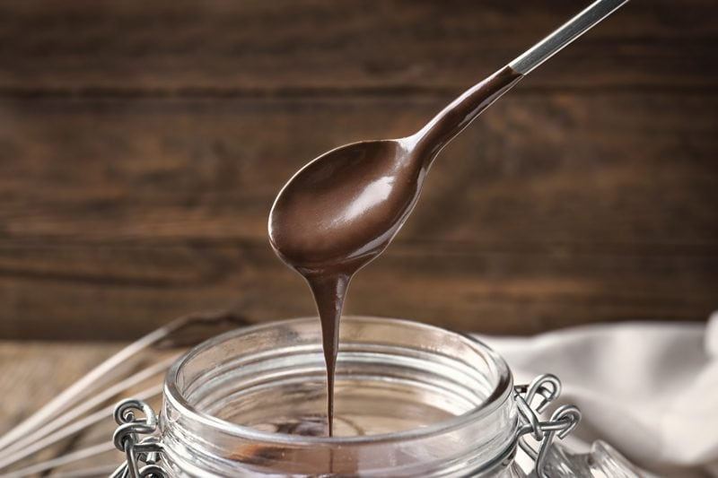
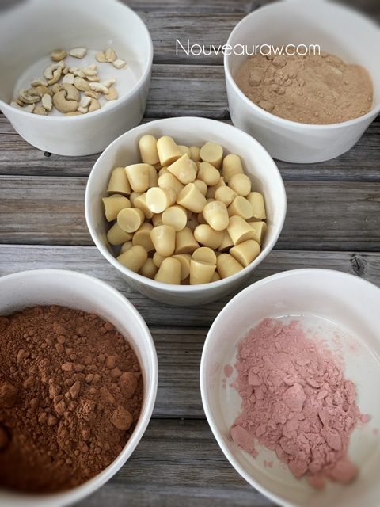
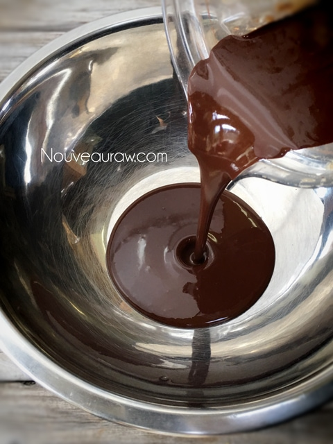
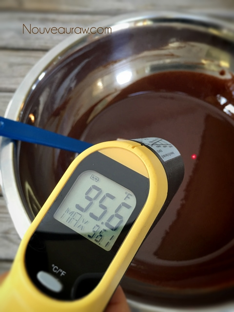
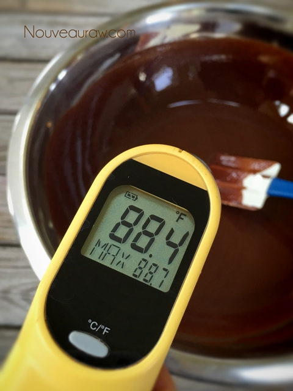

~ raw, vegan, gluten-free ~
This recipe is a beautiful chocolate extravaganza with just one bite. As you hold it in your mouth, it gently melts into a velvety liquid that washes your taste buds with a rich chocolate flavor and activates all those wonderful endorphins… giving you that feel-good-moment… and we could all use more moments like that.

Absent-Minded Moments
For this recipe, I used raw coconut crystals, which is a dry sweetener that is similar in taste and appearance of brown sugar.
At some point in one of my whirlwind frenzy of cleaning moments, I accidentally slipped my coconut crystals into the fridge. Unfortunately, this added moisture prevented me from using it for this recipe, as I couldn’t grind it to a powder without drying it some way.
Do you ever have absent-minded moments like that? I have found my window cleaner in the fridge, and of all things… a stack of kitchen towels in our freezer. Lol, I don’t even want to know what I was thinking at that very moment.
Anyway, all that to say that you want to use a dry sweetener that can be powdered in either a Bullet, spice grinder, or dry Vitamix carafe. The reason for powdering it is so that it doesn’t create a grainy feeling in the chocolate. I haven’t tested a liquid sweetener, so I would leave the recipe as is because it works. I have other recipes in the chocolate category that use liquid sweeteners, so maybe test those out if you are set on using a liquid. When it comes to chocolate, it’s good to stick with what you know works. :)

This particular chocolate recipe multi-talented… it works great for making candies or as a chocolate coating on cookies, bars, or sweet nutballs. Unless you go through the tempering process, which I don’t always do… this chocolate won’t have a hard snap to it and will become sticky if left in warm temperatures. If you like this mold, you can order it (here). I made these guitar-shaped chocolates as a gift for Bob. We just celebrated our Anniversary, and when he opened the present, he took a big bite and said, “You are so “in tune” with me because I have been craving chocolate.” hehe So remember, chocolates make lovely gifts.
Preparation:
- Prepare the molds.
- You don’t need to oil the mold cavities.
- Place the molds on a large cookie sheet ahead of time, which will make it easier to transfer them. Molds can bend and wobble if you carry them alone… this could lead to a mess. Tested it… learn from me. :)
- Prepare a space in the freezer that will accommodate the cookie sheet. It must be flat unless you want your chocolate to be slanted… I won’t judge.
- In a high-powered blender, combine the following ingredients in this order; cacao butter, coconut crystals, pomegranate or vanilla protein powder, cashews, and salt.
- I highly recommend the Vitamix blender that comes with the tamper stick, which helps to push the ingredients into the blade.
- Do not attempt in a food processor. It won’t get silky smooth and will produce grainy chocolate.
- Turn the blender on low and quickly work up to high, using the tamper stick to push the ingredients into the blades.
- Once liquid, add the cacao powder.
- Make sure that you keep the sides of the carafe clean of lumps and grit, especially the side with the pour spout. Failure to do so could cause the lumps to break free as you pour the warm chocolate liquid into the molds, which could make your chocolates gritty.
- You will want to blend on high for roughly 1 minute. Do not allow the temperature to surpass 107 degrees (F).
- All ingredients must come up to temperature together.
- Place your hand on the side of the jug to monitor the temperature of the chocolate; once it starts getting warm, use the thermometer to take the temperature.
- Blend for 30-60 seconds, making sure the cacao powder dissolves and the mixture isn’t gritty.
- Test the batter by rubbing some between two fingers. If you feel grit, keep blending.
Tempering the chocolate: (optional)
- This step will give the chocolate a shine and snap to it. You can skip it if you wish, but the chocolate won’t have that nice snap to it that commercial chocolates have.
- Pour the liquid chocolate into a stainless steel bowl. Glass bowls retain more heat, slowing down the tempering process.
- Gently whisk the chocolate with a rubber spatula, keeping it moving for roughly 10+/- minutes. Again, this will depend on the room temperature.
- Keep checking the temperature. Our goal is to cool it down to 89 degrees (F).
- The chocolate will start to thicken as it cools.
- To test the tempering process, spread a small spoonful of chocolate on a piece of wax paper. If it looks dull or streaky, re-temper the chocolate. If it dries quickly with a glossy finish, the chocolate is in temper.
- Pour the chocolate into the molds.
- If you use flimsy silicone molds, make sure that you have them nestled in a baking tray. This will help transport them if you wish to chill them in the fridge to speed up the dry time. Otherwise, just let them harden on the counter.
- I suggest that you wear cotton gloves when removing the chocolates from the molds to avoid getting fingerprints on the surface of the chocolate.
Creating chocolate shapes:
- Pour the chocolate into the molds.
- Do not fill the cavities all the way to the very top. Leave a fraction of an inch. If you load the cavities to the rim, it will slosh and leak out as you carry the tray to the freezer. I tested this already for you. :)
- If you are using polycarbonate chocolate molds, fill those to the rim so that they release more easily after they harden.
- Grab the cookie sheet that molds are sitting on and lightly tap it on the countertop, which will bring up any air bubbles within the chocolate.
- With grace and ease, carry the tray to the freezer and slide it into the flat surface that you prepared.
- Shut the door, say a prayer, and check your chocolates in about 15 minutes. The thicker the molds are, the longer it will take to freeze all the way through.
- Once the chocolates are fully set up, turn the mold over and tap the corner on the countertop. The candies should drop.
- These chocolates are not tempered, that is another process that takes much more attention to detail. But these will be firm and delicious!
- The least amount of times you handle them, the better. Your fingerprints will get all over them unless you wear a pair of cotton gloves. They make those for chocolatiers.

Have all of your ingredients ready to go before starting.

After blending and reaching 107 degrees (F), transfer to a large stainless steel bowl to temper to 89 degrees (F). Keep stirring through the whole process.

I didn’t document every time I took a reading, but slowly, the temp came down… and down… and down. Keep stirring!

Finally, I hit 88 degrees (F), was aiming for 89 but close enough. It’s now ready to place in the molds